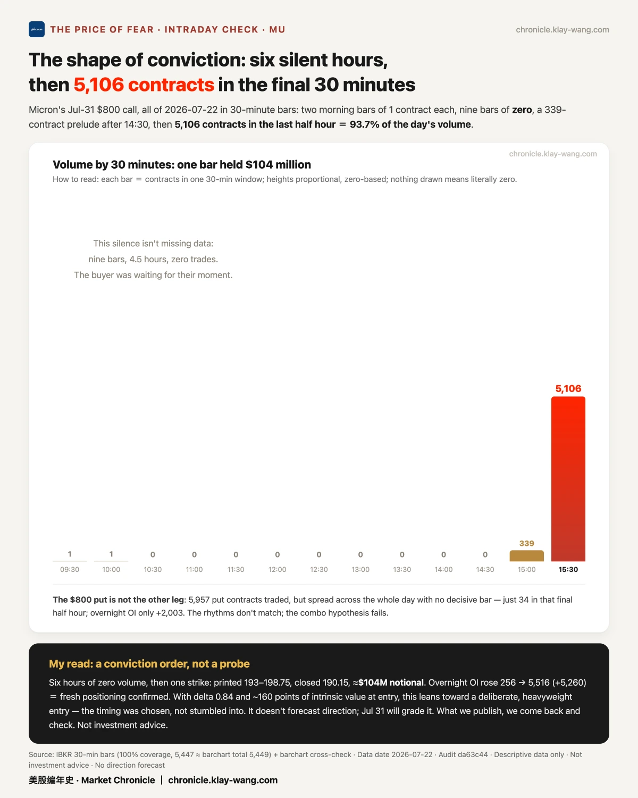

昨天市场挨了三记重拳，却在收盘前自己爬了起来 · 07-24 · 7.20-7.24
• Three punches in one day: economic data, earnings and oil hit at once; the S&P fell hard, closed −1.2%, but clawed back half the drop
• Key levels broke: several big names fell through the prices everyone watches; only Micron pushed the other way, nearly reaching the payout line of a $100M bet
• Yesterday's calls, graded this morning: Nvidia's $300M order wasn't a new bet — it just moved a position to a later month
📋 First, yesterday's calls got graded
My read: we log the big orders, then check them the next morning against real positions.
Nvidia had two huge buy orders yesterday, side by side within a minute, each around 80,000 contracts — it looked like someone loading up bullish. We waited for the overnight positions instead of guessing.
This morning it was clear: the same person moved a position from September to October — closing 78,000 old, opening 88,000 new, the two sizes matching. Just a later expiry, not a fresh bet. About $300M.
🧱 Three punches: the floors broke, but the fall got caught
My read: several support levels gave way; only Micron's ceiling got pushed up from below.
Three hits, same day: jobless claims came in far below forecast (economy still hot), which pushed rates up — the 10-year hit 4.70%, unfriendly for stocks; Google and Tesla earnings kept digesting; and the Middle East plus oil sent Brent to $100. The fear index jumped ~18%.
Each morning we draw a "wall map" — the price on each stock where the most option money is stacked, like a wall. Five support walls below (S&P, Nasdaq, Tesla, Google, Meta) all closed broken. But one thing that didn't happen: after the afternoon bond auction, the biggest losers stopped making new lows, and the S&P closed mid-range. The fall got caught.
⚖️ Tesla: retail bought the dip, big money bought insurance — same day
My read: two opposite ledgers on one stock.
Tesla fell 14.5%, the worst of the seven big tech names this year, and short sellers booked billions in a single day. Yet the same day, retail investors bought more Tesla than any other US stock — about $42M net — and one firm still holds a $450 target. Meanwhile big money spent roughly $300M on "insurance" betting it falls further. Bargain hunters on one side, risk managers on the other, opposite bets the same day. We don't take sides — we log both and wait for expiry.
💰 Micron: the $100M bet, six dollars short
My read: the only ceiling pushed up from below — it got there, then slipped.
Before the close two days ago, someone spent $100M on Micron calls that only start paying if it rises above 996. Yesterday Micron hit 1011, crossed that line twice — but closed back at 990, six dollars (0.6%) short. That buyer's money sits on the round 1000 level, which alone traded 40,000 contracts, nearly 5× its neighbors — the full footprint of that ceiling being tested. So close. We track it to month-end.
🌡 Thermometer: 82 / 100
Our "fear thermometer" measures how expensive one year of "insurance" is right now. Yesterday it read 82 out of 100 — among the priciest of the last three years. The twist: the market fell hard, the short-term panic faded fast, but this long-term price didn't budge. The storm passed; the peace of mind you buy for the long run got no cheaper.
Market Chronicle · 美股编年史：美股市场状态的诚实记录。每个交易日的读数自动提交 GitHub，带时间戳，事前记录、改不了：chronicle.klay-wang.com
不荐股、不喊单、不晒收益。带判断地还原市场温度，只读市场、不指你操作，不构成投资建议。
盘前 digest 创始价 $9.9/月（按年 $99 收 · 前 50 名）：回复"创始"两字即可登记，登记不收费、不扣款。
📁 往期全在这，公开可查，越攒越厚：
Market Chronicle ： an honest record of U.S. market conditions. Every trading day's readings are committed to a public GitHub repo with timestamps: recorded before outcomes, impossible to rewrite. Verify anytime: chronicle.klay-wang.com
No stock picks, no signals, no P&L bragging. A judgment-backed read of the market's temperature — the market's, not your trades. Not investment advice.
Pre-market digest founding price $9.9/mo, billed annually at $99 (first 50 only): reply "founding" to reserve — reserving is free, no charge.
📁 Every past issue, public and growing:




No investment advice. No direction calls. No market timing.